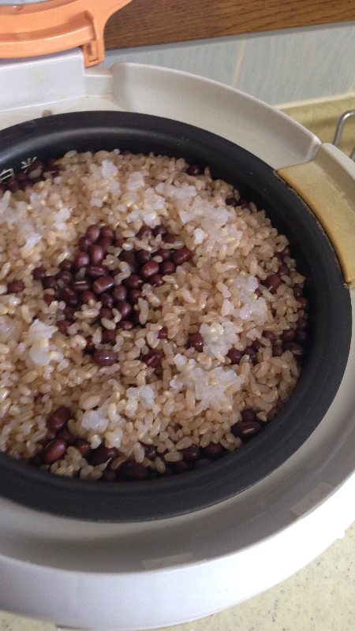

発酵玄米を作ってみました。
詳しくは、こちらへ書きました。

発酵玄米を炊いてみようと思ったきっかけは、
喫茶さえきの佐伯さんの話を聞いてからです。

喫茶さえきは、かつては純喫茶としてサラリーマンの憩いの場所でした。
現在は、オーガニックを中心にした女性に人気のお店になっています。
ランチメニューがいつでも食べられるお店です。
テレビや雑誌をあまり見ない私は、
こんなに人気のお店だとは知りませんでした。
周りの女性に聞くと、多くの人が知っていてびっくりです。
野菜も広島県内の無農薬野菜や調味料もいろいろ研究されていて
とても参考になります。
発酵玄米も、実際に喫茶さえきで食べてみてとても美味しかったので作ってみました。
この発酵玄米のごはんを出すのに、喫茶さえきでは三ヶ月以上試行錯誤されたそうです。
私達は、それほどオーガニックにはこだわりはありません。
体に優しく、美味しいものを頂きたいと思っています。